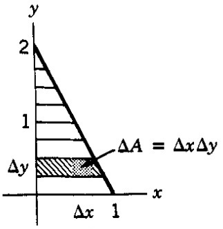
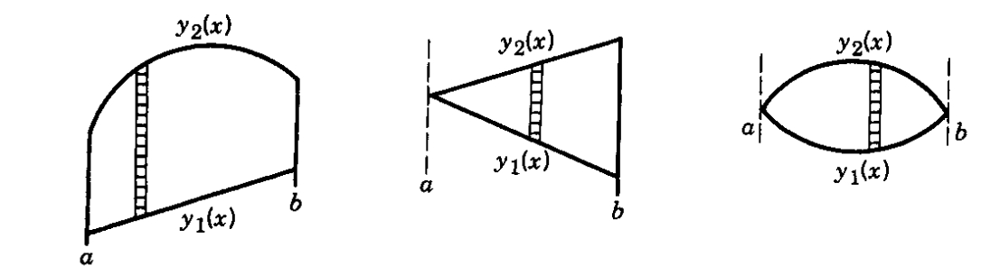
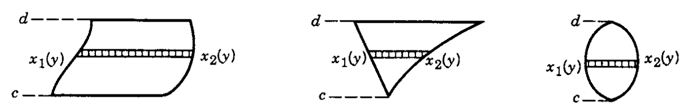
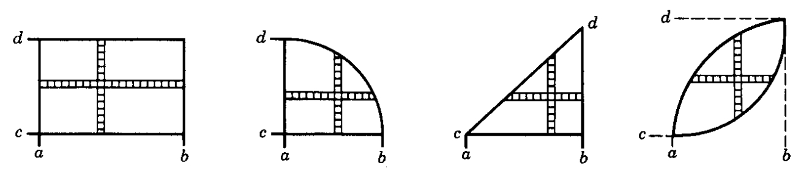
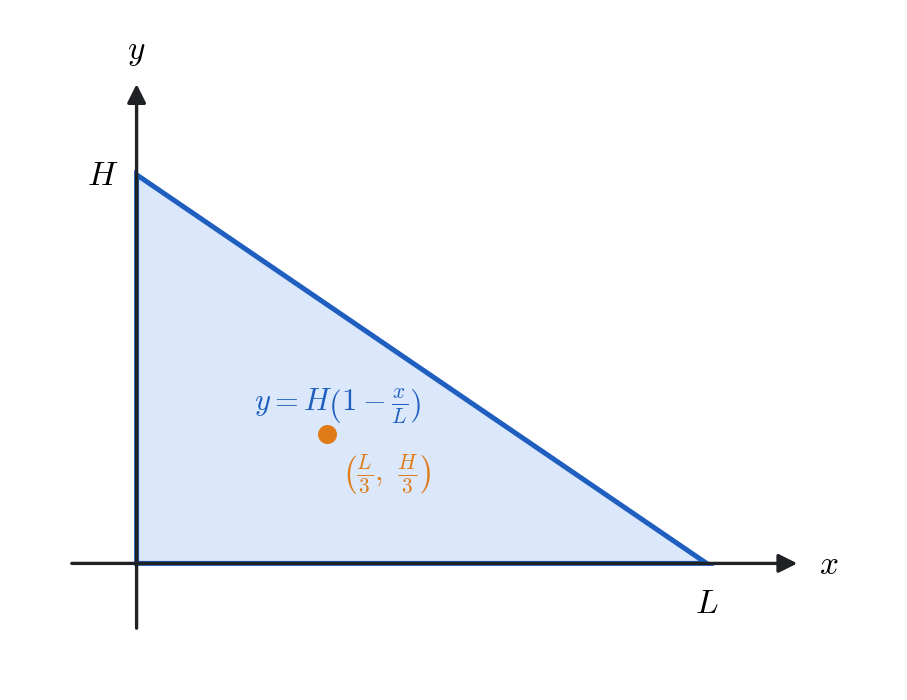

Chapter 5
Multiple Integrals; Applications of Integration
Single integral

If \(f(x)\) is continuous on the closed interval \([a,b]\), the definite integral
represents the accumulated signed area between the curve \(y=f(x)\) and the \(x\)-axis, from \(x=a\) to \(x=b\).
Area above the \(x\)-axis contributes positive value.
Area below the \(x\)-axis contributes negative value.
Double and Triple Integrals
In many physical problems, quantities depend on two or three spatial variables, e.g. temperature \(T(x,y,z)\), mass density \(\rho(x,y,z)\), or electric potential \(\Phi(x,y,z)\). To accumulate such quantities over a region in the plane or in space, we use multiple integrals.
Let \(f(x,y)\) be a continuous function on a region \(A \subset \mathbb{R}^2\). The double integral
represents the accumulated value of \(f\) over the region \(A\).
If \(f(x,y) \ge 0\), it represents the volume under the surface \(z=f(x,y)\) above the region \(A\).
If \(f(x,y)\) takes negative values, the integral subtracts the area under the graph where \(f(x,y)<0\). This keeps the sign information of the function.
In particular, if \(f(x,y) \equiv 1\),
Find the volume of the solid below the plane \(z = 1 + y\), bounded by the coordinate planes and the vertical plane \(2x + y = 2\).

Setup. The projection \(A\) of the solid onto the \(xy\)-plane is the triangle
Since \(z=1+y\), the volume is
Method 1: integrate w.r.t. \(y\) first. For a fixed \(x\), \(y\) runs from \(0\) to \(2-2x\) and \(0\le x\le 1\). Thus

Method 2: integrate w.r.t. \(x\) first. For a fixed \(y\), \(x\) runs from \(0\) to \(1-\tfrac{y}{2}\) and \(0\le y\le 2\). Hence

When to Integrate \(y\)-First vs. \(x\)-First
In evaluating a double integral, the choice of integration order depends on which limits are simpler or which inner integral is easier to evaluate. We typically choose the order that makes the region description and computation more convenient.
Type I Regions (Vertical Strips)
When the region \(A\) is bounded above and below by curves
and \(x\) varies between fixed limits \(a\) and \(b\), we integrate with respect to \(y\) first:

Type II Regions (Horizontal Strips)
When the region \(A\) is bounded on the left and right by curves
and \(y\) varies between fixed limits \(c\) and \(d\), we integrate with respect to \(x\) first:

Either Description Works
If the region \(A\) satisfies both descriptions, either order of integration yields the same result:

If the region \(A = [a,b] \times [c,d]\) is a rectangle and the integrand separates as \(f(x,y) = g(x)\,h(y)\), then
This property can greatly simplify double-integral evaluations.
For a continuous \(f\) on a solid \(R\subset\mathbb{R}^3\),
is the accumulated signed total of \(f\) throughout the solid \(R\). (If \(f\equiv 1\), it equals the volume of \(R\); if \(f=\rho\) is mass density, it equals the mass.)
Find the volume of the solid bounded by the coordinate planes, the vertical plane \(2x+y=2\), and the plane \(z=1+y\) via a triple integral
Solution.
Region and bounds. Projecting onto the \(xy\)-plane gives the triangle
For each \((x,y)\in A\), \(z\) ranges from the bottom \(z=0\) to the top \(z=1+y\).
Triple–integral setup.
as a result:
Evaluate (inner integral first).
The remaining double integral is elementary:
On the same solid \(V\) as above, suppose the density (mass per unit volume) is \(\rho(x,y,z)=x+z\). Find the total mass \(M\).
Solution.
Triple–integral setup.
as a result:
Step 1. Integrate in \(z\).
Step 2. Integrate in \(y\), then \(x\).
Applications of Integration
Center of mass
For any mass distribution with mass element \(dm\) and position vector \(\vec r = x\,\hat{\mathbf i}+y\,\hat{\mathbf j}+z\,\hat{\mathbf k}\), the center of mass is
Specializations (same formula, different \(dm\)):
Components: \(x_{\mathrm{cm}}=\dfrac{1}{M}\int x\,dm,\ y_{\mathrm{cm}}=\dfrac{1}{M}\int y\,dm,\ z_{\mathrm{cm}}=\dfrac{1}{M}\int z\,dm.\)

Centroid of a Right Triangle (Uniform Density \(\sigma_0\))
Solution.
Step 1. Describe the region. The hypotenuse runs from \((L,0)\) to \((0,H)\), so its equation is \(\dfrac{x}{L}+\dfrac{y}{H}=1\), that is \(y = H\!\left(1-\dfrac{x}{L}\right)\). A convenient Type I description is therefore
Step 2. Mass.
Step 3. First moments.
Step 4. Coordinates of the center of mass.
Result. The centroid is
Change of Variables in Integrals
Cartesian coordinates are rarely the natural ones for a physical region. A cylinder, a sphere or a cone has boundaries that are awkward to describe with \(x\), \(y\) and \(z\) but trivial in the right coordinates: a sphere of radius \(a\) is simply \(r = a\). The price is that the volume element is no longer \(dx\,dy\,dz\), and the next two subsections derive what it becomes.
Change of Variables: Cartesian \(\rightarrow\) Cylindrical Coordinates
1. Definition of Cylindrical Coordinates
A point \(P(x, y, z)\) in space can be described using cylindrical coordinates \((\rho, \phi, z)\) defined as:
Here:
\(\rho\) = radial distance from the \(z\)-axis,
\(\phi\) = azimuthal angle (measured counterclockwise from the \(x\)-axis),
\(z\) = same as the Cartesian \(z\)-coordinate.
The position vector of the point is
Substituting the cylindrical coordinate relations:
Thus, we can write
where \(\hat{\rho}\) is the radial unit vector defined by
2. The Local Unit Vectors
At each point, three mutually perpendicular unit vectors are defined:
\(\hat{\rho}\): points radially outward from the \(z\)-axis,
\(\hat{\phi}\): tangent to the circle of constant \(\rho\), points in direction of increasing \(\phi\),
\(\hat{k}\): points along the Cartesian \(z\)-axis.
These three vectors form a right-handed orthonormal basis:
3. Differential Displacement \(d\vec{r}\)
Starting from
we differentiate:
Since \(\hat{\rho}\) depends only on \(\phi\),
Compute this derivative:
Hence,
Substitute into \(d\vec{r}\):

\(d\rho\): small radial displacement,
\(\rho\,d\phi\): small arc length around the \(z\)-axis,
\(dz\): vertical displacement along the \(z\)-axis.
4. Small Surface Element \(d\vec{s}\)
Each coordinate surface has a small area element with magnitude and direction as follows:
5. Small Volume Element \(dV\)
The infinitesimal volume element is formed by the product of the three small lengths:
Thus,
| Quantity | Expression | Description |
| \(\vec{r}\) | \(\rho\,\hat{\rho} + z\,\hat{k}\) | Position vector |
| \(d\vec{r}\) | \(\hat{\rho}\,d\rho + \rho\,\hat{\phi}\,d\phi + \hat{k}\,dz\) | Differential displacement |
| \(d\vec{s}_\rho\) | \(\rho\,d\phi\,dz\,\hat{\rho}\) | Surface element on cylindrical wall |
| \(d\vec{s}_\phi\) | \(d\rho\,dz\,\hat{\phi}\) | Surface element on plane at constant \(\phi\) |
| \(d\vec{s}_z\) | \(\rho\,d\rho\,d\phi\,\hat{k}\) | Surface element on disk (constant \(z\)) |
| \(dV\) | \(\rho\,d\rho\,d\phi\,dz\) | Volume element |
Change of Variables: Cartesian \(\rightarrow\) Spherical Coordinates
1. Definition of Spherical Coordinates
A point \(P(x,y,z)\) in space can be described using spherical coordinates \((r, \theta, \phi)\) defined as:
Here:
\(r\) = radial distance from the origin,
\(\theta\) = polar angle (angle from the \(z\)-axis, \(0 \le \theta \le \pi\)),
\(\phi\) = azimuthal angle (angle from the \(x\)-axis in the \(xy\)-plane, \(0 \le \phi < 2\pi\)).
The position vector of the point is
Substituting the spherical coordinate relations:
Thus, we can write
where \(\hat{r}\) is the radial unit vector defined by
2. The Local Unit Vectors
At each point, three mutually perpendicular unit vectors are defined:
\(\hat{r}\): points radially outward from the origin,
\(\hat{\theta}\): tangent to the circle of constant \(r\) and \(\phi\), points in the direction of increasing \(\theta\),
\(\hat{\phi}\): tangent to the circle of constant \(r\) and \(\theta\), points in the direction of increasing \(\phi\).
These three vectors form a right-handed orthonormal basis:
3. Differential Displacement \(d\vec{r}\)
Differentiating the position vector
we obtain
To find \(d\hat{r}\), note that \(\hat{r}\) depends on both \(\theta\) and \(\phi\):
Compute these derivatives:
Hence,
Substitute into \(d\vec{r} = dr\,\hat{r} + r\,d\hat{r}\):

\(dr\) — small change in radial distance,
\(r\,d\theta\) — small arc length in the direction of increasing \(\theta\),
\(r\sin\theta\,d\phi\) — small arc length in the azimuthal direction.
4. Small Surface Element \(d\vec{s}\)
Each coordinate surface has a small area element with magnitude and direction as follows:
5. Small Volume Element \(dV\)
The infinitesimal volume is formed by the product of the three differential lengths:
Thus,
| Quantity | Expression | Description |
| \(\vec{r}\) | \(r\,\hat{r}\) | Position vector |
| \(d\vec{r}\) | \(\hat{r}\,dr + r\,\hat{\theta}\,d\theta + r\sin\theta\,\hat{\phi}\,d\phi\) | Differential displacement |
| \(d\vec{s}_r\) | \(r^2\sin\theta\, d\theta\, d\phi\,\hat{r}\) | Surface element on sphere (\(r=\text{const}\)) |
| \(d\vec{s}_\theta\) | \(r\sin\theta\, dr\, d\phi\,\hat{\theta}\) | Surface element on cone (\(\theta=\text{const}\)) |
| \(d\vec{s}_\phi\) | \(r\,dr\, d\theta\,\hat{\phi}\) | Surface element on half-plane (\(\phi=\text{const}\)) |
| \(dV\) | \(r^2 \sin\theta\, dr\, d\theta\, d\phi\) | Volume element |
Connection with the Jacobian Matrix
When transforming a multiple integral from one set of variables to another, the Jacobian determinant accounts for the change in scale between coordinate systems.
Suppose we have a triple integral
in some variables \(u, v, w\). Let \(r, s, t\) be another set of variables related by
as a result:
In matrix (differential) form,
where \(J\) is the Jacobian of \(u,v,w\) with respect to \(r,s,t\), then the triple integral in the new variables becomes
The integrand on the right is the same function \(f\), evaluated at the point the new coordinates describe; it is not a new function of \(r,s,t\). The factor \(\left|J\right|\) is what corrects for the fact that a box \(dr\,ds\,dt\) in the new coordinates does not have the same volume as a box \(du\,dv\,dw\) in the old ones.
The function \(f\) and the determinant \(J\) must both be expressed in the new variables, and the limits of integration must be adjusted to correspond to the transformed region.
Verifying the Jacobian for Cylindrical Coordinates
For the transformation \((\rho, \phi, z) \to (x, y, z)\),
The Jacobian matrix is
Compute its determinant:
Verifying the Jacobian for Spherical Coordinates
For the transformation \((r, \theta, \phi) \to (x, y, z)\),
The Jacobian matrix is
Compute each partial derivative:
Therefore,
Expanding the determinant gives
Centroid and Moment of Inertia of a Uniform Solid Cone. Find the \(z\)-coordinate of the centroid \(z_{cm}\) of a uniform solid right circular cone (one nappe) whose height and base radius are both equal to \(h\), that is, one with semi-vertical angle \(45^\circ\). Also find the moment of inertia \(I_z\) about its symmetry axis.

Geometry and coordinates. Place the apex at the origin and the axis along \(+z\). The semi-vertical angle is \(45^\circ\), so the base radius equals the height: both are \(h\). That is why the radius of the cross-section at height \(z\) is itself \(z\), and the lateral surface is \(\rho=z\) (for \(0\le z\le h\)). Use cylindrical coordinates with \(dV=\rho\,d\rho\,d\phi\,dz\) and constant density \(\sigma\). Note that \(\sigma\) denotes the volume density here, written this way because \(\rho\) is already in use as the cylindrical radial coordinate.
Step1: Mass.
Step2: Centroid \( z_{cm}\). Use \( z_{cm}=\dfrac{1}{M}\iiint z\,\sigma\,dV\).
Hence
Step3: Moment of inertia about the axis. \(I_z=\iiint \rho^{2}\,dm=\sigma\iiint \rho^{2}\,dV\).
In terms of \(M\),
Evaluate
by the substitution \( u=x-y,\quad v=x+y. \)
Solution.
Step 1. Map and Jacobian. The inverse relations are
Hence
Step 2. Region in \((u,v)\). The original region is \( R=\{(x,y): x\ge 0,\ y\ge 0,\ x+y\le 1\}. \) On \(R\),
(because along \(x=0\Rightarrow u=-v\) and along \(y=0\Rightarrow u=v\)).
Step 3. Transform the integrand and limits.
Step 4. Integrate. For fixed \(v>0\),
Therefore
Where Multiple Integrals Are Used
Every integral in this chapter is an accumulation: chop a region into pieces, evaluate a quantity on each piece, and add. What changes from one application to the next is only what sits inside the integral.
Mass and centre of mass. With \(dm = \rho\,dV\), the same triple integral gives the mass, and weighting by \(\vec r\) gives the centre of mass. The cone worked above is the standard example.
Moment of inertia. Weighting instead by the squared distance from an axis gives \(I_z = \iiint \rho_\perp^2\,dm\), which is what determines how hard a body is to spin up. Chapter 3 showed that this is really a symmetric matrix whose eigenvectors are the principal axes.
Charge and current distributions. Replacing mass density by charge density gives the total charge; the same integrals reappear throughout electromagnetism when computing fields from extended sources.
Probability. In statistical mechanics and quantum mechanics a probability density is integrated over a region to give the probability of finding the system there. The normalisation condition is a multiple integral set to \(1\).
Choosing coordinates. The volume elements \(\rho\,d\rho\,d\phi\,dz\) and \(r^2\sin\theta\,dr\,d\theta\,d\phi\) derived here are used constantly in Chapters 6, 7 and 10. Almost every integral over a sphere in later chapters carries the factor \(r^2\sin\theta\).
Two habits are worth taking from this chapter. First, draw the region and decide the order of integration before writing anything down; most of the difficulty in a multiple integral is in the limits, not the antiderivatives. Second, choose coordinates that match the symmetry of the region. A sphere described in Cartesian coordinates produces limits containing \(\sqrt{a^2-x^2-y^2}\); in spherical coordinates the same region is just \(r \le a\), and the price is the single factor \(r^2\sin\theta\).
Summary Table
| Item | Expression | Notes |
| Double integral | \(\iint_A f\,dA\) | Volume under \(z=f(x,y)\); area if \(f\equiv1\). |
| Triple integral | \(\iiint_R f\,dV\) | Volume if \(f\equiv1\); mass if \(f=\rho\). |
| Type I region | \(\int_a^b\!\int_{y_1(x)}^{y_2(x)} f\,dy\,dx\) | Vertical strips; \(y\) first. |
| Type II region | \(\int_c^d\!\int_{x_1(y)}^{x_2(y)} f\,dx\,dy\) | Horizontal strips; \(x\) first. |
| Separable integrand | \(\left(\int_a^b g\right)\left(\int_c^d h\right)\) | Only on a rectangle, with \(f=g(x)h(y)\). |
| Centre of mass | \(\vec r_{\mathrm{cm}} = \frac{1}{M}\int \vec r\,dm\) | \(dm = \sigma\,dA\) or \(\rho\,dV\). |
| Cylindrical | \(x=\rho\cos\phi\), \(y=\rho\sin\phi\), \(z=z\) | \(dV = \rho\,d\rho\,d\phi\,dz\). |
| Spherical | \(x=r\sin\theta\cos\phi\), , \(z=r\cos\theta\) | \(dV = r^2\sin\theta\,dr\,d\theta\,d\phi\). |
| Jacobian | \(J = \det\!\big(\frac{\partial (u,v,w)}{\partial (r,s,t)}\big)\) | \(du\,dv\,dw = \left|J\right|\,dr\,ds\,dt\). |
| Cylindrical Jacobian | \(\left|J\right| = \rho\) | Recovers \(dV = \rho\,d\rho\,d\phi\,dz\). |
| Spherical Jacobian | \(\left|J\right| = r^2\sin\theta\) | Recovers \(dV = r^2\sin\theta\,dr\,d\theta\,d\phi\). |
For the Interested Reader
The hardest part of a multiple integral is almost never the antiderivative — it is setting up the limits and choosing the coordinates. The sources below have far more practice at exactly that than we have room for. Everything listed is free.
Setting up double and triple integrals
OpenStax, Calculus Volume 3, Chapter 5. 5.2 Double Integrals over General Regions is the one to read if choosing the order of integration still feels uncertain; it works through many regions of both types. 5.4 Triple Integrals continues into three dimensions.
Paul's Online Math Notes. Double Integrals — a large set of worked problems, with the region sketched for each. Sketching first is the habit worth copying.
Cylindrical, spherical and the Jacobian
OpenStax. 5.5 Triple Integrals in Cylindrical and Spherical Coordinates covers the volume elements derived here, and 5.7 Change of Variables in Multiple Integrals gives the general Jacobian argument in more detail than we do.
Paul's Online Math Notes. Change of Variables — more substitutions of the \(u = x-y\), \(v = x+y\) kind used in the last example, where the point is to straighten out an awkward region rather than to simplify the integrand.
We derived the volume elements twice on purpose: once geometrically, by multiplying the three small lengths along the coordinate directions, and once algebraically, as the Jacobian determinant. The geometric route shows why the factors \(\rho\) and \(r^2\sin\theta\) appear; the Jacobian route is the one that generalises to coordinates with no easy picture. It is worth being comfortable with both, because physics arguments usually quote the first and calculations usually use the second.